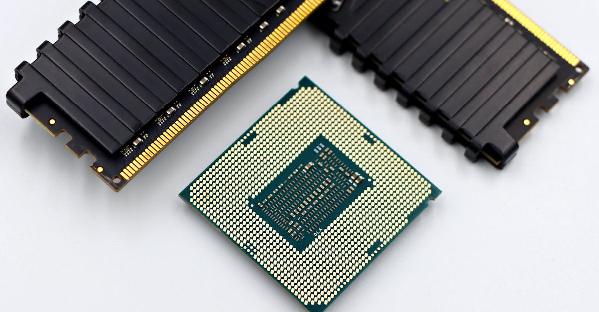

Le Cœur Numérique de l'Asie : Un Enjeu Stratégique Majeur
L'actualité financière bruisse d'une rumeur qui, si elle se concrétise, pourrait redéfinir le paysage des infrastructures numériques en Asie : Stack Infrastructure Inc., une entité détenue par le géant de l'investissement Blue Owl Capital, envisagerait de céder ses opérations asiatiques, une transaction qui pourrait atteindre la somme colossale de 30 milliards de dollars. Ce chiffre donne le vertige et souligne l'importance stratégique, souvent sous-estimée, des data centers dans notre économie globalisée. Mais au-delà de l'aspect purement financier, que révèle une telle manœuvre pour l'avenir de la technologie, et plus spécifiquement pour l'intelligence artificielle (IA) et le monde florissant du trading de cryptomonnaies ?
👉 À lire : L'IA, bulle ou révolution ? Core Scientific lève 3,3 Mds $ pour l'avenir.
L'Asie, avec sa population gigantesque et sa numérisation galopante, est devenue un épicentre de l'innovation technologique. Des mégalopoles vibrantes comme Singapour, Tokyo, Hong Kong ou Mumbai sont non seulement des hubs financiers, mais aussi des carrefours pour le flux de données. Les data centers y sont les véritables poumons numériques, abritant les serveurs qui alimentent tout, des applications mobiles aux services de streaming, en passant par les plateformes de e-commerce et, bien sûr, les infrastructures critiques pour l'IA et la blockchain. Sans ces forteresses de silicium et de fibre optique, l'économie numérique s'effondrerait. Ils sont la fondation invisible sur laquelle repose notre monde interconnecté, permettant à nos agents IA de trader les cryptos 24h/24 sans interruption.
👉 À lire : Londres : L'IA Redessine le Skyline et l'Avenir de la Finance
Un deal de cette envergure n'est pas qu'une simple transaction immobilière. Il s'agit d'une réaffectation massive de capital vers un secteur jugé vital, un baromètre de la confiance des investisseurs dans la croissance exponentielle de la demande en puissance de calcul et en stockage de données. Il témoigne également d'une consolidation progressive du marché, où les acteurs majeurs cherchent à optimiser leurs portefeuilles géographiques et à capitaliser sur des actifs de grande valeur. La vente potentielle des opérations asiatiques de Stack Infrastructure, si elle se matérialise, enverrait un signal fort à l'ensemble de l'écosystème technologique et financier : les data centers sont désormais des actifs de premier plan, comparables aux infrastructures énergétiques ou de transport d'autrefois, mais avec une dimension stratégique décuplée par l'ère numérique. C'est une affirmation de la valeur intrinsèque de ces hubs de données, essentiels pour le traitement des algorithmes sophistiqués de l'IA et pour la fluidité des transactions cryptos mondiales.

L'Opération Stack Infrastructure : Décryptage d'un Deal à 30 Milliards
L'information, rapportée par Bloomberg Technology, est encore au stade de la considération, mais l'ampleur potentielle de la transaction – 30 milliards de dollars – la place d'emblée sous les feux de la rampe. Stack Infrastructure Inc., un acteur significatif dans le domaine des data centers, est donc au cœur de cette rumeur. L'entreprise est sous la houlette de Blue Owl Capital, un fonds d'investissement alternatif spécialisé dans les stratégies de crédit et d'équité privée, qui gère des milliards d'actifs. La décision d'explorer une vente de ses actifs asiatiques n'est pas anodine ; elle s'inscrit dans une dynamique de marché où l'appétit pour les infrastructures numériques est vorace, mais où les stratégies d'investissement évoluent rapidement.
Pourquoi Blue Owl Capital envisagerait-il une telle cession ? Plusieurs hypothèses peuvent être avancées. Premièrement, il pourrait s'agir d'une stratégie de monétisation d'actifs à forte valeur. Après avoir investi et développé ces infrastructures, le moment pourrait être opportun pour réaliser des plus-values substantielles, profitant d'une demande record et de valorisations élevées. Deuxièmement, cela pourrait refléter une réorientation stratégique du portefeuille de Blue Owl, privilégiant peut-être d'autres régions ou d'autres types d'actifs au sein de l'écosystème technologique. Enfin, une telle opération pourrait attirer de nouveaux géants de l'investissement ou des consortiums cherchant à s'implanter ou à renforcer leur présence dans le marché asiatique des data centers, un marché en pleine explosion.
Les implications d'un tel deal sont multiples. Pour Stack Infrastructure, une vente permettrait de libérer des capitaux considérables, qui pourraient être réinvestis dans d'autres régions géographiques ou dans des innovations technologiques spécifiques, comme les solutions de refroidissement avancées ou les infrastructures optimisées pour l'IA. Pour les acquéreurs potentiels, l'intégration des opérations asiatiques de Stack représenterait un coup de maître, leur offrant un accès direct à des marchés à forte croissance et à une clientèle établie. Imaginez l'impact sur la capacité de calcul disponible pour les projets d'intelligence artificielle ou pour les opérations de minage de cryptomonnaies : une injection de capital ou un changement de propriétaire peut signifier des investissements massifs dans l'amélioration des performances, de la sécurité et de l'efficacité énergétique. Comme le dit un analyste fictif de notre équipe, Dr. Anya Sharma : « Ces transactions massives ne sont pas juste des chiffres, elles sont le reflet de la vision d'un futur où la donnée est reine, et où ceux qui la stockent et la traitent détiennent les clés de l'innovation. » Ce sont ces clés qui déverrouillent la puissance de calcul nécessaire à nos agents IA pour anticiper les mouvements des marchés cryptos avec une précision chirurgicale, 24 heures sur 24.
La Soif Insatiable de Données : Moteur de la Croissance des Data Centers
La demande pour les data centers n'a jamais été aussi forte, et elle continue de croître à un rythme effréné. Cette soif insatiable de données est le moteur principal derrière les valorisations astronomiques que nous observons sur ce marché. Mais d'où vient cette demande ? Elle est multifacette et profondément ancrée dans les transformations numériques que nous vivons. Le cloud computing est sans doute le premier pilier. Des entreprises de toutes tailles migrent leurs infrastructures vers le cloud, exigeant des capacités de stockage et de calcul flexibles et évolutives. Les géants du cloud comme AWS, Azure et Google Cloud sont eux-mêmes d'énormes consommateurs d'espace en data center, soit en construisant les leurs, soit en louant auprès d'opérateurs comme Stack.
Ensuite, il y a l'explosion des contenus numériques. Le streaming vidéo en 4K et bientôt en 8K, les jeux vidéo en ligne, les réseaux sociaux, tout cela génère un volume de données colossal qui doit être stocké, traité et distribué. Chaque clic, chaque visionnage, chaque interaction se traduit par une demande sur un serveur quelque part dans un data center. La 5G, en offrant des vitesses de connexion sans précédent et une latence réduite, ne fait qu'amplifier ce phénomène, ouvrant la voie à de nouvelles applications gourmandes en données, de l'Internet des Objets (IoT) aux villes intelligentes.
Mais au-delà de ces tendances générales, deux domaines spécifiques propulsent la demande de data centers à des niveaux inédits : l'Intelligence Artificielle et les cryptomonnaies. L'IA, avec ses modèles de plus en plus complexes et ses besoins en entraînement massifs, est une véritable ogre de puissance de calcul. Chaque développement dans le machine learning, chaque nouveau grand modèle de langage (LLM) comme GPT-4, exige des milliers de GPU (Graphics Processing Units) fonctionnant en parallèle pendant des semaines, voire des mois. Ces GPU, et les serveurs qui les hébergent, nécessitent des infrastructures énergétiques et de refroidissement de pointe, que seuls les data centers modernes peuvent offrir. De même, les opérations de blockchain et de minage de cryptomonnaies, bien que souvent décentralisées dans leur philosophie, s'appuient sur des fermes de serveurs et des équipements spécialisés qui trouvent leur place au sein de ces infrastructures massives. La vente potentielle des actifs asiatiques de Stack s'inscrit donc parfaitement dans cette dynamique de marché, où la capacité à fournir de l'infrastructure numérique est synonyme de puissance et de rentabilité, soutenant indirectement la capacité de nos agents IA à décrypter les signaux du marché crypto 24h/24 et à prendre des décisions éclairées.

L'Intelligence Artificielle : Le Nouveau Goulot d'Étranglement des Infrastructures
L'intelligence artificielle est sans conteste la technologie transformatrice de notre décennie. Des assistants virtuels aux véhicules autonomes, en passant par la médecine personnalisée et, bien sûr, le trading algorithmique, l'IA est partout. Cependant, cette révolution a un coût : une demande énergétique et de calcul phénoménale qui met à rude épreuve les infrastructures existantes. Les modèles d'IA les plus avancés, notamment les grands modèles de langage et les réseaux neuronaux profonds, nécessitent des clusters de GPU d'une densité incroyable. Or, ces puces génèrent une chaleur considérable, exigeant des systèmes de refroidissement ultra-sophistiqués, souvent liquides, pour maintenir les températures optimales et éviter la surchauffe.
Un data center classique n'est pas toujours équipé pour gérer une telle densité de puissance. Les infrastructures doivent être repensées, non seulement en termes de refroidissement, mais aussi d'alimentation électrique. La consommation énergétique des data centers dédiés à l'IA est astronomique, soulevant des questions cruciales sur la durabilité et l'approvisionnement en énergie verte. C'est pourquoi les investissements dans les data centers ne se limitent plus à l'expansion de l'espace, mais incluent également des innovations majeures dans l'efficacité énergétique et la gestion thermique. Les entreprises qui peuvent offrir des solutions optimisées pour l'IA se positionnent comme des acteurs clés de l'avenir numérique.
Cette course à l'infrastructure IA a des répercussions directes sur le secteur du trading de cryptomonnaies. Les algorithmes d'IA utilisés par des plateformes comme CryptoMind AI pour analyser les marchés, prédire les tendances et exécuter des trades 24h/24, dépendent entièrement de la puissance de calcul fournie par ces data centers de nouvelle génération. Plus l'infrastructure est robuste et performante, plus les agents IA peuvent traiter des volumes de données importants, exécuter des analyses complexes en temps réel et réagir aux fluctuations du marché avec une rapidité inégalée. Un goulot d'étranglement au niveau de l'infrastructure pourrait limiter la sophistication et la réactivité de ces systèmes, impactant directement leur efficacité. L'investissement massif dans les data centers, tel que celui que sous-tend la rumeur Stack, est donc une excellente nouvelle pour l'écosystème de l'IA et, par extension, pour le trading crypto intelligent. Il garantit que nos outils d'analyse et de décision continueront de bénéficier des ressources nécessaires pour rester à la pointe de l'innovation et de la performance, même lorsque les exigences de calcul s'intensifient exponentiellement.
Crypto et Blockchain : Les Consommateurs Énergétiques Discrets des Data Centers
Si l'IA est un consommateur évident et bruyant de ressources informatiques, le monde des cryptomonnaies et de la blockchain est un client plus discret, mais tout aussi exigeant, des data centers. Bien que la philosophie des cryptomonnaies soit souvent ancrée dans la décentralisation, la réalité technique de leur fonctionnement repose sur une infrastructure centralisée par endroits. Le minage de cryptomonnaies, notamment pour des réseaux comme Bitcoin ou Ethereum (avant le passage au Proof of Stake), a toujours été une activité gourmande en énergie et en puissance de calcul. Les fermes de minage, composées de milliers d'ASICs (Application-Specific Integrated Circuits) ou de GPU, sont souvent hébergées dans des data centers spécialisés ou des installations industrielles à proximité de sources d'énergie bon marché. Ces fermes nécessitent une alimentation électrique stable, un refroidissement efficace et une connectivité réseau fiable, autant de services fournis par les opérateurs de data centers.
Mais au-delà du minage, l'ensemble de l'écosystème blockchain dépend des data centers. Les nœuds de validation des différentes blockchains, les bourses d'échange de cryptomonnaies, les plateformes de finance décentralisée (DeFi), les fournisseurs de portefeuilles numériques – tous ces services requièrent des serveurs puissants et sécurisés, fonctionnant 24h/24, 7j/7. Les data centers offrent l'environnement idéal pour ces opérations critiques : sécurité physique et logique, résilience face aux pannes, bande passante élevée et redondance des systèmes. Sans cette infrastructure sous-jacente, le rêve d'une économie décentralisée resterait une utopie technique.
Pour les plateformes de trading crypto basées sur l'IA, la fiabilité des data centers est une condition sine qua non. Nos agents IA, qui scrutent les marchés en continu et exécutent des transactions avec une réactivité fulgurante, ne peuvent se permettre aucune interruption. Un temps d'arrêt, même minime, peut signifier la perte d'opportunités ou l'incapacité de réagir à des mouvements de marché soudains. C'est pourquoi les investissements dans des infrastructures de data centers robustes et résilientes sont directement bénéfiques pour l'efficacité et la sécurité du trading crypto automatisé. La vente potentielle des actifs asiatiques de Stack, en injectant de nouveaux capitaux et en potentiellement modernisant ou étendant ces capacités, pourrait donc indirectement renforcer la fiabilité et la performance de l'ensemble de l'écosystème crypto en Asie et au-delà. Comme l'a souligné un expert en infrastructure blockchain, « La décentralisation est un idéal, mais la performance et la sécurité sont une réalité qui exige des fondations solides, et ces fondations sont les data centers. »
Les Mega-Deals : Symptômes d'un Marché en Ébullition ou Signes d'une Maturité ?
Le marché des data centers est en pleine effervescence, comme en témoigne la rumeur autour de Stack Infrastructure et de son potentiel deal à 30 milliards de dollars. Mais que signifient ces méga-transactions ? Sont-elles le signe d'un marché en pleine bulle, surévalué et prêt à éclater, ou au contraire, la preuve d'une maturité et d'une reconnaissance de la valeur fondamentale de ces infrastructures ? Il est probable que la vérité se situe quelque part entre les deux, avec une prépondérance vers la seconde option.
D'une part, les valorisations sont indéniablement élevées. L'afflux de capitaux provenant de fonds de private equity, de fonds souverains et d'autres investisseurs institutionnels a fait grimper les prix. La concurrence est féroce pour acquérir des actifs de qualité, en particulier dans des régions à forte croissance comme l'Asie. Cette pression à la hausse pourrait faire craindre une surchauffe, où les rendements futurs seraient compressés par des prix d'acquisition trop élevés. Certains analystes mettent en garde contre une éventuelle bulle, arguant que la capacité de croissance future pourrait ne pas justifier les valorisations actuelles.
D'autre part, ces méga-deals peuvent être interprétés comme un signe de maturité du marché. Les data centers sont passés du statut de simple immobilier technique à celui d'infrastructure critique, au même titre que l'énergie ou les télécommunications. Les investisseurs reconnaissent la nature essentielle de ces actifs et leur capacité à générer des flux de revenus stables et prévisibles sur le long terme. C'est une industrie qui n'est plus marginale, mais au cœur de l'économie numérique. La consolidation est une étape naturelle dans la maturation d'un secteur, permettant aux acteurs de réaliser des économies d'échelle, d'optimiser leurs opérations et d'offrir des services plus intégrés. « Les grands acteurs ne se contentent plus de construire des data centers ; ils construisent des écosystèmes. Et ces écosystèmes sont la colonne vertébrale de l'innovation, de l'IA au Web3, » a commenté un observateur du marché.
Pour le trading crypto par IA, cette dynamique est cruciale. Un marché mature et consolidé signifie des infrastructures plus robustes, des standards de service plus élevés et une plus grande fiabilité. Les investissements massifs dans ce secteur garantissent que la puissance de calcul nécessaire pour faire fonctionner des agents IA sophistiqués sera disponible et en constante amélioration. Cela réduit le risque d'interruption de service et assure une base technologique solide pour l'innovation. En fin de compte, ces méga-deals sont le reflet d'une confiance profonde dans l'avenir numérique, un avenir où l'IA et la blockchain joueront des rôles prépondérants, et où la capacité à les soutenir sera la clé du succès pour les investisseurs comme pour les utilisateurs.
L'Impact sur l'Écosystème Global : De l'Asie aux Marchés Financiers
Une transaction de 30 milliards de dollars pour des data centers en Asie n'est pas un événement isolé ; elle a des répercussions bien au-delà des frontières de la région et du secteur spécifique. Sur le plan géographique, un tel investissement renforce la position de l'Asie comme un pôle majeur de l'économie numérique mondiale. Les pays qui peuvent offrir des environnements stables, des infrastructures de qualité et des politiques favorables aux investissements technologiques sont les grands gagnants. Inversement, les régions à la traîne risquent de voir leur compétitivité numérique décliner. Cela pourrait également intensifier la concurrence entre les nations asiatiques pour attirer de futurs investissements en data centers, stimulant l'innovation et la baisse des coûts d'énergie pour les infrastructures.
Sur les marchés financiers, une telle opération envoie un signal fort. Elle valide la thèse d'investissement dans les infrastructures numériques comme une classe d'actifs à part entière, capable de générer des rendements significatifs. Cela pourrait encourager d'autres fonds d'investissement à se positionner sur ce créneau, augmentant encore les flux de capitaux vers le secteur. Pour les investisseurs en technologies, cela confirme l'importance capitale de l'infrastructure sous-jacente. L'innovation logicielle, qu'il s'agisse d'IA ou de blockchain, ne peut prospérer sans une fondation matérielle solide. L'argent suit la puissance de calcul, et la puissance de calcul est dans les data centers.
Quel est le lien avec le trading crypto par IA ? Directement, un renforcement de l'infrastructure mondiale signifie une plus grande résilience et une meilleure performance pour toutes les applications numériques, y compris les plateformes de trading. Indirectement, l'afflux de capitaux vers les infrastructures numériques peut être interprété comme un signe de confiance dans la croissance future de l'économie numérique dans son ensemble. Et qui dit croissance numérique dit expansion des cas d'usage de l'IA et des cryptomonnaies. L'optimisme des investisseurs dans les data centers se propage à l'ensemble de l'écosystème tech, créant un environnement propice à l'innovation et à l'adoption de nouvelles technologies financières. Comme l'a si bien formulé une experte en macroéconomie, Dr. Li Wei : « Les flux de capitaux vers les infrastructures sont le sang qui irrigue l'économie numérique. Quand le sang circule bien, tout l'organisme, y compris les marchés émergents comme la crypto, en bénéficie. » Une infrastructure mondiale robuste est la garantie que nos agents IA pourront opérer avec la même efficacité et la même rapidité, que le marché soit à Tokyo, Londres ou New York, assurant ainsi une couverture 24h/24 sans faille.
L'Avenir des Infrastructures Numériques : Vers une Symbiose avec l'IA et la Crypto
L'avenir des infrastructures numériques est intrinsèquement lié à l'évolution de l'intelligence artificielle et des cryptomonnaies. Ces deux technologies ne sont pas de simples consommateurs de ressources ; elles sont aussi des catalyseurs d'innovation pour les data centers eux-mêmes. L'IA, par exemple, est de plus en plus utilisée pour optimiser la gestion des data centers : de la prédiction des pannes à l'optimisation de la consommation énergétique, en passant par la gestion du refroidissement et la sécurité. Des algorithmes d'apprentissage automatique analysent des téraoctets de données opérationnelles pour identifier des schémas, anticiper les problèmes et améliorer l'efficacité globale, transformant le data center d'une simple boîte de serveurs en un organisme numérique intelligent.
De même, la blockchain pourrait jouer un rôle dans la gestion décentralisée de certaines ressources de data centers ou dans la certification de l'origine de l'énergie utilisée, répondant aux préoccupations croissantes en matière de durabilité. Les concepts de Web3 et de métavers, qui promettent des expériences immersives et une propriété numérique accrue, nécessiteront des capacités de calcul et de stockage encore plus massives et distribuées. Cela pousse à la création de data centers de périphérie (edge data centers) plus proches des utilisateurs finaux, réduisant la latence et augmentant la réactivité des applications.
L'investissement dans les data centers, tel que celui envisagé par Blue Owl Capital, n'est donc pas seulement une réaction à la demande actuelle, mais une anticipation des besoins futurs. Les data centers de demain seront plus denses, plus efficaces énergétiquement, plus intelligents et plus sécurisés. Ils intègreront des technologies de pointe en matière de refroidissement, d'alimentation électrique et de connectivité. Ils seront les piliers sur lesquels reposeront les prochaines générations d'IA, de blockchain et de toutes les innovations numériques à venir. « L'infrastructure physique et l'intelligence logicielle ne sont plus distinctes ; elles fusionnent pour créer des systèmes autonomes et résilients, capables de gérer la complexité du monde numérique, » a déclaré un futurologue spécialisé dans les technologies de l'information. Cette symbiose est essentielle pour des outils comme nos agents IA de trading crypto, qui nécessitent une infrastructure capable d'évoluer et de s'adapter aux défis toujours plus grands du marché.
Opportunités et Défis : Naviguer dans le Paysage des Data Centers
Alors que le marché des data centers connaît une croissance fulgurante, il est impératif de reconnaître les opportunités qu'il offre ainsi que les défis qu'il présente. L'opportunité majeure réside dans la capacité à capitaliser sur la demande exponentielle en puissance de calcul et en stockage, alimentée par l'IA, le cloud et la blockchain. Les investisseurs avisés peuvent réaliser des rendements substantiels en se positionnant sur des actifs stratégiques ou en finançant des innovations dans ce secteur. Pour les entreprises technologiques, c'est l'occasion d'assurer la pérennité de leurs opérations en garantissant l'accès à des infrastructures de pointe. Imaginez la tranquillité d'esprit de savoir que les agents IA qui gèrent vos investissements crypto bénéficient d'une fondation technologique inébranlable, capable de traiter des téraoctets de données en quelques millisecondes, 24h/24.
Cependant, les défis sont également nombreux. Le premier est la pression énergétique. La consommation électrique des data centers est une préoccupation croissante, tant d'un point de vue environnemental que financier. La recherche de sources d'énergie renouvelables et l'amélioration de l'efficacité énergétique sont des priorités absolues. Le deuxième défi est la sécurité. Les data centers sont des cibles de choix pour les cyberattaques, ce qui exige des investissements constants dans des systèmes de défense robustes. Enfin, la complexité de la gestion et de la maintenance de ces infrastructures massives nécessite des compétences techniques pointues et des investissements humains significatifs.
Pour les acteurs du trading crypto par IA, ces défis et opportunités sont directement pertinents. La dépendance à une infrastructure énergétique durable et sécurisée est fondamentale. Un data center alimenté par des énergies renouvelables et doté de systèmes de sécurité de pointe renforce non seulement la résilience des opérations de trading, mais aussi la confiance des utilisateurs. Les plateformes qui peuvent garantir que leurs agents IA fonctionnent sur des infrastructures responsables et sécurisées auront un avantage concurrentiel certain. L'opération Stack Infrastructure, si elle aboutit, pourrait être un catalyseur pour l'adoption de nouvelles normes et de meilleures pratiques dans la construction et l'exploitation des data centers en Asie. Cela pourrait se traduire par des infrastructures encore plus fiables, plus rapides et plus vertes, bénéficiant directement à l'ensemble de l'écosystème numérique, y compris les systèmes d'IA qui pilotent nos investissements cryptos. Comme le dit un entrepreneur du secteur des énergies vertes : « L'avenir de l'IA et de la crypto n'est pas seulement dans le code, il est aussi dans le kilowatt. »
Conclusion
La rumeur d'une vente potentielle des opérations asiatiques de Stack Infrastructure pour 30 milliards de dollars est bien plus qu'une simple transaction financière. C'est un puissant indicateur de la valeur stratégique que représentent les data centers dans notre monde hyper-connecté. Ces forteresses de la donnée sont les véritables moteurs de l'économie numérique, des piliers essentiels qui soutiennent l'expansion fulgurante de l'intelligence artificielle et l'émergence continue du monde des cryptomonnaies.
Pour des innovations comme les agents IA de trading crypto, qui opèrent 24h/24 avec une précision et une rapidité inégalées, l'existence d'une infrastructure de data centers robuste, sécurisée et évolutive n'est pas une option, mais une nécessité absolue. Les investissements massifs dans ce secteur garantissent que nos systèmes d'IA disposeront toujours de la puissance de calcul nécessaire pour analyser des marchés complexes, identifier des opportunités et exécuter des trades avec une efficacité maximale. Cette transaction potentielle en Asie, si elle se concrétise, renforcera non seulement la capacité de la région, mais enverra également un signal de confiance global dans l'avenir numérique.
En fin de compte, l'histoire des data centers est l'histoire de notre avenir numérique. Chaque investissement, chaque innovation dans ce domaine, est un pas de plus vers un monde où l'IA et la blockchain peuvent réaliser leur plein potentiel, transformant nos vies et nos finances. Et au cœur de cette transformation, nos agents IA continueront de travailler sans relâche, alimentés par ces infrastructures numériques de pointe, pour vous guider à travers les complexités du marché crypto.